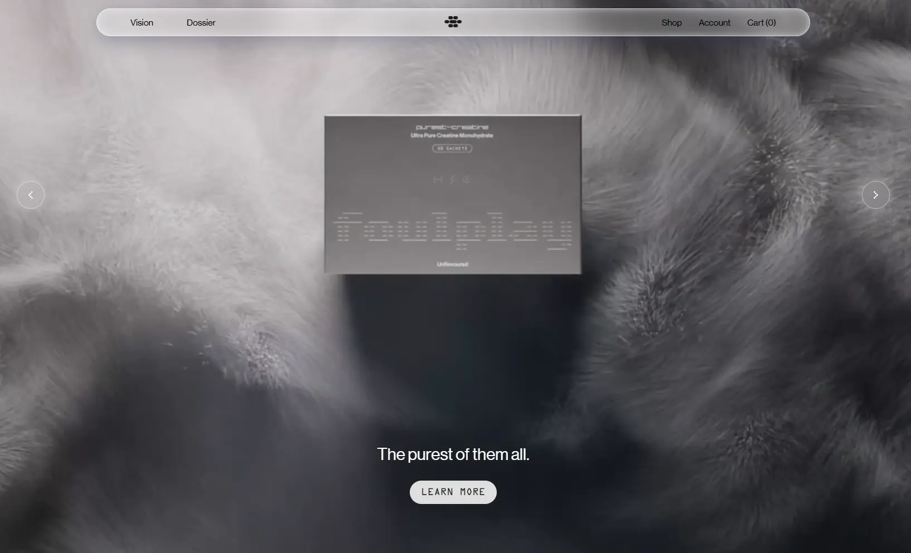

Foulplay
- Интернет-магазин
- Магазины и e-commerce
- Обычным пользователям
- Люкс
- Минимализм
- Монохром
- Тёмная тема
- Нейтральный фон
- Видео-фон
- Микроанимации
- Переходы между страницами
- Shopify
- Judge.me
- Loop Subscriptions
- Secomapp Affiliate
- Google tag
- Английский язык
- Действующий сайт

Что это
Магазин премиального спортивного питания: креатин в саше и жевательных «байтах», наборы и немного мерча. Подача — как у люксового бренда: чёрно-белые крупные планы, видео вместо баннеров, минимум текста. Добавка выглядит дорогим аксессуаром, а не спортивным порошком. Пафосный сайт премиального производителя креатина для спортсменов. Незаурядная вёрстка и качественная 3D-графика.
Что смотреть в первую очередь
Смотреть первый экран с видеофоном и раздел Science, где четыре преимущества переключают фильм и текст. Дальше — каталог с видео-превью карточек.
Приёмы
- Видео-фон
- Микроанимации
- Переходы между страницами
Интересные факты
- Первый экран держится на видео во всю ширину окна: в разметке главной больше десяти зацикленных видеофонов, и каждый подключается только при подходе к нему, а до этого показывается статичная картинка-заглушка.
- Раздел про науку сделан как четыре кнопки-преимущества (мышцы, восстановление, концентрация, возраст): выбор меняет и короткий фильм, и пояснение к нему. Все четыре варианта лежат в разметке сразу, а переключение помечено для экранных дикторов.
- У карточек товаров в каталоге есть собственные короткие видео с пометкой hover — по коду они включаются при наведении, то есть витрина «оживает» ещё до захода в карточку.
- Магазин работает на Shopify: корзина открывается боковой панелью, есть подписка на регулярную доставку и отзывы сторонним сервисом Judge.me.
- В подвале — переключатель из 36 стран и валют, по умолчанию выставлены Сингапур и сингапурский доллар; там же мелким шрифтом предупреждение, что товары продаются как пищевые добавки.
- robots.txt закрывает сайт от всех роботов: «User-agent: *» и «Disallow: /».
- Прямые запросы к сайту из этой сети отдают 403, поэтому страницы читались через перевод-релей translate.goog, а заголовки и метаданные — через api.microlink.io.
Паспорт
- Домен
- usefoulplay.com
- Тип сайта
- Интернет-магазин
- Категории
- Магазины и e-commerce
- Подкатегории
- не указано
- Для кого
- Обычным пользователям
- Стиль
- Люкс, Минимализм, Монохром
- Язык
- Английский
- Страна
- не указано
- Автор
- Luke Hoban и студия Subject Matter
- Год
- 2026
- Добавлен в коллекцию
- 11.11.2026
Палитра
-
#3C3B40— 30% кадра -
#6C696B— 24% кадра -
#BDB8BA— 22% кадра -
#1F2227— 16% кадра -
#918E90— 7% кадра
- Режим
- Тёмная
- Цвет фона
- Нейтральный
Технологии
- Shopify
- Judge.me
- Loop Subscriptions
- Secomapp Affiliate
- Google tag (gtag)